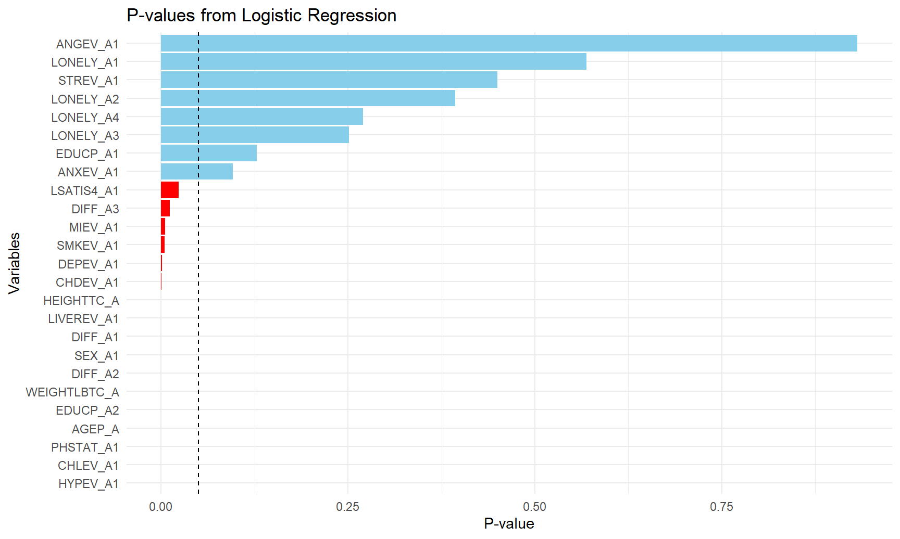
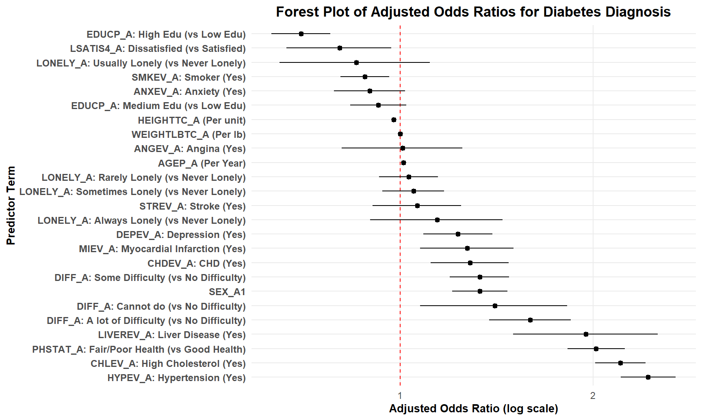
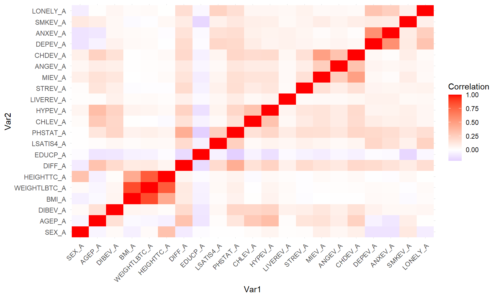
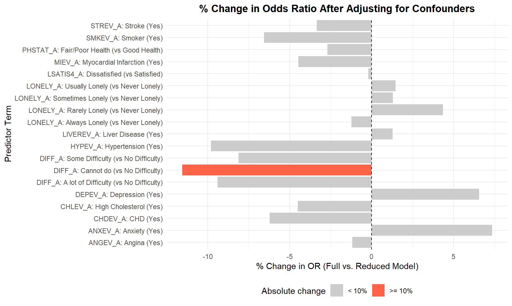
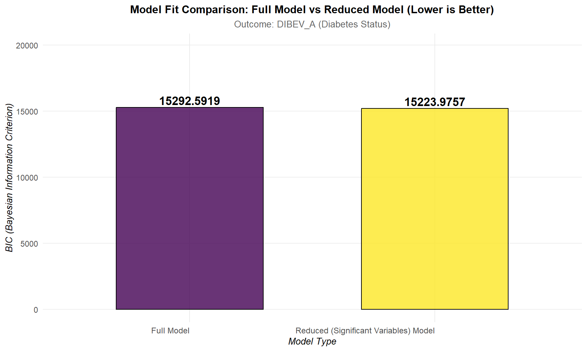

source(here("data", "datacleaning.R"))## Warning: package 'readxl' was built under R version 4.5.2This analysis aims to investigate factors associated with the likelihood of being diagnosed with diabetes (DIBEV_A) using a multivariable logistic regression model. Covariates include demographic, lifestyle, physical health, and chronic disease indicators.
The outcome variable, DIBEV_A, is a binary indicator
representing whether an individual has been diagnosed with diabetes (0 =
No diabetes, 1 = Diabetes diagnosis). Given the binary nature of the
outcome, a logistic regression model within the Generalized Linear Model
(GLM) framework was employed. Logistic regression is appropriate for
modeling the probability of an event occurring while ensuring predicted
probabilities remain between 0 and 1, using a logit link to relate the
linear combination of predictors to the log-odds of the outcome.
Covariates in the model include demographic factors (e.g., sex and age), anthropometric measures (weight and height), lifestyle indicators, and a range of chronic disease or health status variables. Categorical variables, including BMI category, educational attainment, and various health event indicators, were encoded as factors to allow estimation of separate effects for each non-reference level. Continuous variables such as age, weight, and height were included directly.
The logistic regression model can be formally expressed as:
\[ \text{Logit}(P(\text{DIBEV_A}=1)) = \beta_0 + \sum_{i=1}^{20} \beta_i X_i \]
where \(X_i\) represents each covariate, including both categorical indicator variables and continuous predictors, and \(\beta_i\) denotes the corresponding log-odds coefficient. Exponentiating the coefficients yields odds ratios, which provide a clinically interpretable measure of the relative likelihood of diabetes associated with each predictor, conditional on all other variables in the model.
The outcome variable, DIBEV_A, is coded as a binary factor (0 = No diabetes, 1 = Diabetes diagnosis). Several categorical predictors are converted to factor type, and continuous variables such as age, height, and weight are included directly. A logistic regression model with a logit link is fitted.
The original detailed model :
\[ \text{Logit}(P(\text{DIBEV_A}=1)) = \log\left(\frac{P(\text{DIBEV_A}=1)}{1-P(\text{DIBEV_A}=1)}\right) = \beta_0 \\ + \beta_1 \cdot \text{SEX_A} + \beta_2 \cdot \text{AGEP_A} + \beta_3 \cdot \text{WEIGHTLBTC_A} + \beta_4 \cdot \text{HEIGHTTC_A} \\ + \beta_5 \cdot \text{DIFF_A} + \beta_6 \cdot \text{EDUCP_A} + \beta_7 \cdot \text{LSATIS4_A} + \beta_8 \cdot \text{PHSTAT_A} + \beta_9 \cdot \text{CHLEV_A} \\ + \beta_{10} \cdot \text{HYPEV_A} + \beta_{11} \cdot \text{LIVEREV_A} + \beta_{12} \cdot \text{STREV_A} + \beta_{13} \cdot \text{MIEV_A} + \beta_{14} \cdot \text{ANGEV_A} \\ + \beta_{15} \cdot \text{CHDEV_A} + \beta_{16} \cdot \text{DEPEV_A} + \beta_{17} \cdot \text{ANXEV_A} + \beta_{18} \cdot \text{SMKEV_A} + \beta_{19} \cdot \text{LONELY_A} \]
df_model =
nhis24_df_fit |>
mutate(
# Outcome: DIBEV_A
DIBEV_A = factor(DIBEV_A, levels = c(0, 1)),
# Covariates - Dichotomous/Ordinal/Categorical (MUST be factor)
SEX_A = factor(SEX_A), # Assume 1/2 coding is acceptable
DIFF_A = factor(DIFF_A), # Codes 0, 1, 2, 3
EDUCP_A = factor(EDUCP_A), # Codes 0, 1, 2
LSATIS4_A = factor(LSATIS4_A), # Codes 0, 1
PHSTAT_A = factor(PHSTAT_A), # Codes 0, 1
CHLEV_A = factor(CHLEV_A), # Codes 0, 1
HYPEV_A = factor(HYPEV_A), # Codes 0, 1
LIVEREV_A = factor(LIVEREV_A), # Codes 0, 1
STREV_A = factor(STREV_A), # Codes 0, 1
MIEV_A = factor(MIEV_A), # Codes 0, 1
ANGEV_A = factor(ANGEV_A), # Codes 0, 1
CHDEV_A = factor(CHDEV_A), # Codes 0, 1
DEPEV_A = factor(DEPEV_A), # Codes 0, 1
ANXEV_A = factor(ANXEV_A), # Codes 0, 1
SMKEV_A = factor(SMKEV_A), # Codes 0, 1
LONELY_A = factor(LONELY_A) # Codes 0, 1, 2, 3, 4
) model_formula <- DIBEV_A ~ SEX_A + AGEP_A + WEIGHTLBTC_A + HEIGHTTC_A +
DIFF_A + EDUCP_A + LSATIS4_A + PHSTAT_A + CHLEV_A +
HYPEV_A + LIVEREV_A + STREV_A + MIEV_A + ANGEV_A +
CHDEV_A + DEPEV_A + ANXEV_A + SMKEV_A + LONELY_A
glm_model <- glm(
model_formula,
data = df_model,
family = binomial(link = "logit")
)
summary(glm_model)##
## Call:
## glm(formula = model_formula, family = binomial(link = "logit"),
## data = df_model)
##
## Coefficients:
## Estimate Std. Error z value Pr(>|z|)
## (Intercept) -2.7267527 0.2980681 -9.148 < 2e-16 ***
## SEX_A1 0.2862709 0.0505910 5.659 1.53e-08 ***
## AGEP_A 0.0124270 0.0018275 6.800 1.05e-11 ***
## WEIGHTLBTC_A 0.0010069 0.0001564 6.438 1.21e-10 ***
## HEIGHTTC_A -0.0228491 0.0045609 -5.010 5.45e-07 ***
## DIFF_A1 0.2858171 0.0542219 5.271 1.35e-07 ***
## DIFF_A2 0.4667300 0.0747197 6.246 4.20e-10 ***
## DIFF_A3 0.3399129 0.1345590 2.526 0.011533 *
## EDUCP_A1 -0.0780269 0.0512598 -1.522 0.127963
## EDUCP_A2 -0.3555672 0.0538897 -6.598 4.17e-11 ***
## LSATIS4_A1 -0.2174969 0.0958377 -2.269 0.023242 *
## PHSTAT_A1 0.7039887 0.0524590 13.420 < 2e-16 ***
## CHLEV_A1 0.7904943 0.0461989 17.111 < 2e-16 ***
## HYPEV_A1 0.8909999 0.0501839 17.755 < 2e-16 ***
## LIVEREV_A1 0.6678149 0.1322618 5.049 4.44e-07 ***
## STREV_A1 0.0613937 0.0811969 0.756 0.449584
## MIEV_A1 0.2405962 0.0857587 2.806 0.005024 **
## ANGEV_A1 0.0095383 0.1105820 0.086 0.931263
## CHDEV_A1 0.2508067 0.0716892 3.499 0.000468 ***
## DEPEV_A1 0.2081887 0.0632520 3.291 0.000997 ***
## ANXEV_A1 -0.1089665 0.0654382 -1.665 0.095876 .
## SMKEV_A1 -0.1260164 0.0444401 -2.836 0.004573 **
## LONELY_A1 0.0305683 0.0537037 0.569 0.569218
## LONELY_A2 0.0482583 0.0565496 0.853 0.393449
## LONELY_A3 -0.1575505 0.1373534 -1.147 0.251363
## LONELY_A4 0.1338970 0.1214139 1.103 0.270108
## ---
## Signif. codes: 0 '***' 0.001 '**' 0.01 '*' 0.05 '.' 0.1 ' ' 1
##
## (Dispersion parameter for binomial family taken to be 1)
##
## Null deviance: 17654 on 24037 degrees of freedom
## Residual deviance: 15031 on 24012 degrees of freedom
## (1 observation deleted due to missingness)
## AIC: 15083
##
## Number of Fisher Scoring iterations: 5glm_summary = summary(glm_model)
p_values_df = data.frame(
Variable = rownames(glm_summary$coefficients),
P_value = glm_summary$coefficients[, "Pr(>|z|)"]
)
# Remove intercept
p_values_df =
p_values_df[p_values_df$Variable != "(Intercept)", ]
P_value_hisg =
p_values_df|>
ggplot(aes(x = reorder(Variable, P_value), y = P_value)) +
geom_bar(
stat = "identity",
fill = ifelse(p_values_df$P_value < 0.05, "red", "skyblue")
) +
geom_hline(yintercept = 0.05, linetype = "dashed", color = "black") +
coord_flip() +
labs(
title = "P-values from Logistic Regression",
x = "Variables",
y = "P-value"
) +
theme_minimal()
P_value_hisg
Tidy results.
tidy_logit <- function(model) {
broom::tidy(model, conf.int = TRUE) |>
mutate(
Beta = estimate,
OR = exp(estimate),
Lower_CI = exp(conf.low),
Upper_CI = exp(conf.high),
p.value = format.pval(p.value, digits = 3, eps = 0.001)
) |>
select(term, Beta, OR, Lower_CI, Upper_CI, p.value)
}Clean up term names for presentation.
clean_term_labels <- function(df) {
df |>
mutate(
term = gsub("`", "", term),
Term = case_when(
term == "(Intercept)" ~ "Intercept",
term == "SEX_A2" ~ "SEX_A: Female (vs Male)",
# Difficulty Walking (0: No Difficulty)
term == "DIFF_A1" ~ "DIFF_A: Some Difficulty (vs No Difficulty)",
term == "DIFF_A2" ~ "DIFF_A: A lot of Difficulty (vs No Difficulty)",
term == "DIFF_A3" ~ "DIFF_A: Cannot do (vs No Difficulty)",
# Education (0: Low Education)
term == "EDUCP_A1" ~ "EDUCP_A: Medium Edu (vs Low Edu)",
term == "EDUCP_A2" ~ "EDUCP_A: High Edu (vs Low Edu)",
# Life Satisfaction (0: Satisfied/Very Satisfied)
term == "LSATIS4_A1" ~ "LSATIS4_A: Dissatisfied (vs Satisfied)",
# Health Status (0: Good/VGood/Excellent Health)
term == "PHSTAT_A1" ~ "PHSTAT_A: Fair/Poor Health (vs Good Health)",
# Loneliness (0: Never Lonely)
term == "LONELY_A1" ~ "LONELY_A: Rarely Lonely (vs Never Lonely)",
term == "LONELY_A2" ~ "LONELY_A: Sometimes Lonely (vs Never Lonely)",
term == "LONELY_A3" ~ "LONELY_A: Usually Lonely (vs Never Lonely)",
term == "LONELY_A4" ~ "LONELY_A: Always Lonely (vs Never Lonely)",
# Chronic Dichotomous Conditions (1: Yes vs 0: No)
term == "CHLEV_A1" ~ "CHLEV_A: High Cholesterol (Yes)",
term == "HYPEV_A1" ~ "HYPEV_A: Hypertension (Yes)",
term == "LIVEREV_A1" ~ "LIVEREV_A: Liver Disease (Yes)",
term == "STREV_A1" ~ "STREV_A: Stroke (Yes)",
term == "MIEV_A1" ~ "MIEV_A: Myocardial Infarction (Yes)",
term == "ANGEV_A1" ~ "ANGEV_A: Angina (Yes)",
term == "CHDEV_A1" ~ "CHDEV_A: CHD (Yes)",
term == "DEPEV_A1" ~ "DEPEV_A: Depression (Yes)",
term == "ANXEV_A1" ~ "ANXEV_A: Anxiety (Yes)",
term == "SMKEV_A1" ~ "SMKEV_A: Smoker (Yes)",
# Continuous Variables
term == "AGEP_A" ~ "AGEP_A (Per Year)",
term == "WEIGHTLBTC_A" ~ "WEIGHTLBTC_A (Per lb)",
term == "HEIGHTTC_A" ~ "HEIGHTTC_A (Per unit)",
TRUE ~ term
)
) |>
select(Term, Beta, OR, Lower_CI, Upper_CI, p.value)
}Generate kable table.
format_logit_table <- function(df,
caption,
footnote_text = "Reference Outcome: No Diabetes (DIBEV_A = 0).") {
df |>
dplyr::mutate(
OR_CI = paste0(
round(OR, 3), " (",
round(Lower_CI, 3), " - ",
round(Upper_CI, 3), ")"
),
Beta = round(Beta, 4)
) |>
dplyr::select(Term, Beta, OR_CI, p.value) |>
knitr::kable(
caption = caption,
col.names = c("Predictor Term", "Coefficient (Beta)", "Adjusted OR (95% CI)", "P-value"),
align = c("l", "r", "r", "r"),
booktabs = TRUE
) |>
kableExtra::kable_styling(
full_width = TRUE,
position = "left",
latex_options = "hold_position"
) |>
kableExtra::add_header_above(c(" " = 2, "Odds Ratio" = 1, " " = 1)) |>
kableExtra::footnote(
general = footnote_text,
threeparttable = TRUE
)
}model_results_tidy =
glm_model |>
tidy_logit() |>
clean_term_labels()
model_results_tidy |>
format_logit_table(
caption = "Multivariable Logistic Regression of Diabetes Diagnosis (Adjusted Odds Ratios)"
)| Predictor Term | Coefficient (Beta) | Adjusted OR (95% CI) | P-value |
|---|---|---|---|
| Intercept | -2.7268 | 0.065 (0.036 - 0.117) | < 0.001 |
| SEX_A1 | 0.2863 | 1.331 (1.206 - 1.47) | < 0.001 |
| AGEP_A (Per Year) | 0.0124 | 1.013 (1.009 - 1.016) | < 0.001 |
| WEIGHTLBTC_A (Per lb) | 0.0010 | 1.001 (1.001 - 1.001) | < 0.001 |
| HEIGHTTC_A (Per unit) | -0.0228 | 0.977 (0.969 - 0.986) | < 0.001 |
| DIFF_A: Some Difficulty (vs No Difficulty) | 0.2858 | 1.331 (1.196 - 1.48) | < 0.001 |
| DIFF_A: A lot of Difficulty (vs No Difficulty) | 0.4667 | 1.595 (1.377 - 1.845) | < 0.001 |
| DIFF_A: Cannot do (vs No Difficulty) | 0.3399 | 1.405 (1.075 - 1.823) | 0.01153 |
| EDUCP_A: Medium Edu (vs Low Edu) | -0.0780 | 0.925 (0.836 - 1.023) | 0.12796 |
| EDUCP_A: High Edu (vs Low Edu) | -0.3556 | 0.701 (0.63 - 0.779) | < 0.001 |
| LSATIS4_A: Dissatisfied (vs Satisfied) | -0.2175 | 0.805 (0.665 - 0.969) | 0.02324 |
| PHSTAT_A: Fair/Poor Health (vs Good Health) | 0.7040 | 2.022 (1.824 - 2.24) | < 0.001 |
| CHLEV_A: High Cholesterol (Yes) | 0.7905 | 2.204 (2.014 - 2.414) | < 0.001 |
| HYPEV_A: Hypertension (Yes) | 0.8910 | 2.438 (2.21 - 2.691) | < 0.001 |
| LIVEREV_A: Liver Disease (Yes) | 0.6678 | 1.95 (1.5 - 2.521) | < 0.001 |
| STREV_A: Stroke (Yes) | 0.0614 | 1.063 (0.906 - 1.245) | 0.44958 |
| MIEV_A: Myocardial Infarction (Yes) | 0.2406 | 1.272 (1.074 - 1.504) | 0.00502 |
| ANGEV_A: Angina (Yes) | 0.0095 | 1.01 (0.811 - 1.252) | 0.93126 |
| CHDEV_A: CHD (Yes) | 0.2508 | 1.285 (1.116 - 1.478) | < 0.001 |
| DEPEV_A: Depression (Yes) | 0.2082 | 1.231 (1.087 - 1.393) | < 0.001 |
| ANXEV_A: Anxiety (Yes) | -0.1090 | 0.897 (0.788 - 1.019) | 0.09588 |
| SMKEV_A: Smoker (Yes) | -0.1260 | 0.882 (0.808 - 0.962) | 0.00457 |
| LONELY_A: Rarely Lonely (vs Never Lonely) | 0.0306 | 1.031 (0.928 - 1.145) | 0.56922 |
| LONELY_A: Sometimes Lonely (vs Never Lonely) | 0.0483 | 1.049 (0.939 - 1.172) | 0.39345 |
| LONELY_A: Usually Lonely (vs Never Lonely) | -0.1576 | 0.854 (0.649 - 1.112) | 0.25136 |
| LONELY_A: Always Lonely (vs Never Lonely) | 0.1339 | 1.143 (0.898 - 1.446) | 0.27011 |
| Note: | |||
| Reference Outcome: No Diabetes (DIBEV_A = 0). |
First of all, we filter out terms that are very close to 1 with wide CIs and non-significant to reduce clutter. Secondly, we order the terms for better visualization, e.g., by OR value.
forest_data =
model_results_tidy |>
filter(Term != "Intercept") |>
mutate(Term = fct_reorder(Term, OR, .desc = TRUE))
forest_plots =
ggplot(forest_data, aes(x = OR, y = Term)) +
geom_vline(xintercept = 1, linetype = "dashed", color = "red") +
geom_pointrange(aes(xmin = Lower_CI, xmax = Upper_CI), size = 0.3) +
scale_x_log10(breaks = c(0.1, 0.2, 0.5, 1, 2, 5, 10),
labels = c("0.1", "0.2", "0.5", "1", "2", "5", "10")) +
labs(
title = "Forest Plot of Adjusted Odds Ratios for Diabetes Diagnosis",
x = "Adjusted Odds Ratio (log scale)",
y = "Predictor Term"
) +
theme_minimal() +
theme(
plot.title = element_text(hjust = 0.5, face = "bold"),
axis.text.y = element_text(size = 9, face = "bold"),
axis.title.x = element_text(size = 10, face = "bold"),
axis.title.y = element_text(size = 10, face = "bold"),
panel.grid.minor.x = element_blank() # Remove minor grid lines on x-axis
)
print(forest_plots)
This forest plot displays adjusted odds ratios (ORs) for diabetes diagnosis, where the y-axis lists predictors (with reference groups in parentheses), and the x-axis (log scale) shows ORs (dashed red line at OR=1, no association). Based on the plots, we used the 95% confidence interval (CI) exclusion of 1 as the measure of statistical significance, several variables demonstrated a significant independent association with a diabetes diagnosis. Predictors with OR < 1 and 95% CIs not crossing 1 (e.g., height, higher education, lower loneliness, smoking, anxiety) are linked to lower diabetes risk; those with OR > 1 and significant CIs (e.g., liver disease, fair/poor health, high cholesterol, hypertension) increase risk; and factors like stroke history, severe mobility difficulty, and some loneliness categories have CIs crossing 1, showing no significant association.
Below is the interpretation of the logistic regression output, with each variable summarized under its own subsection.
Males had significantly lower odds of diabetes compared with females after adjusting for all covariates.
Older age was a small but statistically significant risk factor for diabetes.
Smoking showed a borderline non-significant inverse
association.
There is no strong evidence of an association between smoking and
diabetes in this adjusted model.
Compared with the “Never Lonely” reference group:
None of the loneliness categories were statistically
significant.
Loneliness does not appear to be independently associated with diabetes
risk.
Higher education was protective.
Those with high education had markedly lower odds of diabetes.
The original dataset included a categorical BMI variable, with normal weight (BMI category 0) as the reference group:
Reference = BMI category 0 (Normal weight)
BMI demonstrated a strong dose-response relationship, with obesity being the strongest risk factor in the model. Furthermore, we derived a new continuous BMI variable using the standard BMI formula (weight in kilograms divided by height in meters squared) from the dataset’s height and weight measurements. This continuous transformation integrates information on both height and weight, thereby helping to account for potential confounding by these two variables.
Reference = No difficulty
Greater mobility limitations were associated with higher odds of diabetes.
Poor health was a strong predictor of diabetes.
A strong and significant association.
Hypertension was one of the largest predictors, more than doubling the odds of diabetes.
Individuals with liver disease had nearly double the odds of diabetes.
Not statistically significant.
History of myocardial infarction was positively associated with diabetes.
No association.
CHD was a significant predictor of diabetes.
Depression was significantly associated with increased diabetes odds.
Anxiety was not significantly related to diabetes.
Overall, the multivariable logistic regression analysis identifies several strong predictors of diabetes. Obesity, hypertension, high cholesterol, liver disease, poor general health, and myocardial infarction were among the strongest risk factors, each contributing substantially to elevated diabetes odds. Higher education showed a consistent protective effect. Mobility limitations were also associated with greater risk, illustrating the interconnected nature of physical functioning and metabolic health. While depression was significantly associated with increased diabetes risk, other psychosocial factors such as anxiety and loneliness were not significant in this adjusted model. Smoking likewise showed no significant association. Collectively, these findings highlight the multifactorial nature of diabetes, involving biological, behavioral, and socioeconomic determinants.
To better understand the relationships between the variables in our dataset, we find the need to conduct a correlation analysis. The original dataset was obtained from the 2024 NHIS (National Health Interview Survey), which contains information on demographic characteristics, health conditions, and behavioral factors for a nationally representative sample of adults. The cleaned dataset included variables such as age, sex, weight, height, and various health indicators.
Correlation analysis serves as a preliminary step to identify variables that are linearly associated. Understanding these relationships helps us: - Detect potential multicollinearity before performing regression analyses or more complex modeling. - Provide evidence-based justification for including or excluding certain variables in our following statistical models.
We computed pairwise Pearson correlations for all numeric variables. Correlations with an absolute value greater than 0.3 are considered moderate or strong associations. Additionally, diagonal elements (self-correlations) were excluded from interpretation, and symmetric duplicates were removed to ensure clarity.
To understand Coefficient of determination (\(R^2\)), \(R^2\) represents the proportion of the variance in one variable that is predictable from the other variable. For our selected threshold of \(r = 0.3\): \[R^2 = (0.3)^2 = 0.09\] This means that for two variables correlated at \(r = 0.3\), 9% of the variation in one variable is explained by the other variable.
# Select numeric variables
numeric_vars <- nhis24_df_fit[, sapply(nhis24_df_fit, is.numeric)]
# Compute correlation matrix
cor_matrix <- cor(numeric_vars, use = "pairwise.complete.obs")
# Show matrix
print(cor_matrix)## SEX_A AGEP_A DIBEV_A BMI_A WEIGHTLBTC_A
## SEX_A 1.000000000 -0.042868452 0.02608891 -0.0650727624 0.023775186
## AGEP_A -0.042868452 1.000000000 0.15877588 -0.0272003899 -0.039137255
## DIBEV_A 0.026088910 0.158775881 1.00000000 0.0545989532 0.045913915
## BMI_A -0.065072762 -0.027200390 0.05459895 1.0000000000 0.859544477
## WEIGHTLBTC_A 0.023775186 -0.039137255 0.04591391 0.8595444771 1.000000000
## HEIGHTTC_A 0.316690735 -0.063600389 0.01826195 0.4337936457 0.799050011
## DIFF_A -0.083609340 0.314770024 0.18926808 0.1061498687 0.111853142
## EDUCP_A -0.018633349 -0.110167585 -0.10219806 -0.0590023651 -0.053751746
## LSATIS4_A 0.004632828 0.014765722 0.04304834 0.0205394334 0.032437704
## PHSTAT_A 0.004457287 0.132158188 0.21397035 0.0660719575 0.080806904
## CHLEV_A 0.021368849 0.282071105 0.20928841 0.0062743947 -0.003624974
## HYPEV_A 0.052776072 0.340902944 0.23069476 0.0617338291 0.054635473
## LIVEREV_A 0.010586810 0.015679225 0.07282944 0.0214833347 0.024908047
## STREV_A 0.013346295 0.138577050 0.08623710 -0.0114561332 -0.009061361
## MIEV_A 0.084168840 0.152957613 0.12550468 0.0004131829 0.008573370
## ANGEV_A 0.042301310 0.093236622 0.07918214 0.0052707714 0.010858902
## CHDEV_A 0.080453996 0.236341084 0.15359455 0.0036214698 0.014244862
## DEPEV_A -0.117213295 -0.056379711 0.06588226 0.0298515815 0.028601496
## ANXEV_A -0.118336875 -0.101487120 0.03924959 0.0268792180 0.022858494
## SMKEV_A 0.114485589 0.088677637 0.03930695 -0.0195357886 -0.006836127
## LONELY_A -0.075645427 0.006805329 0.04730837 0.0207701391 0.026246070
## HEIGHTTC_A DIFF_A EDUCP_A LSATIS4_A PHSTAT_A
## SEX_A 0.316690735 -0.08360934 -0.01863335 0.004632828 0.004457287
## AGEP_A -0.063600389 0.31477002 -0.11016759 0.014765722 0.132158188
## DIBEV_A 0.018261953 0.18926808 -0.10219806 0.043048336 0.213970354
## BMI_A 0.433793646 0.10614987 -0.05900237 0.020539433 0.066071958
## WEIGHTLBTC_A 0.799050011 0.11185314 -0.05375175 0.032437704 0.080806904
## HEIGHTTC_A 1.000000000 0.05452161 -0.01570732 0.032379136 0.057532948
## DIFF_A 0.054521614 1.00000000 -0.15337103 0.186227732 0.420770390
## EDUCP_A -0.015707315 -0.15337103 1.00000000 -0.059392669 -0.199170105
## LSATIS4_A 0.032379136 0.18622773 -0.05939267 1.000000000 0.244884587
## PHSTAT_A 0.057532948 0.42077039 -0.19917011 0.244884587 1.000000000
## CHLEV_A -0.019786386 0.15297892 -0.05612826 0.030514010 0.150759149
## HYPEV_A 0.029607578 0.22892321 -0.13011996 0.060304278 0.210468137
## LIVEREV_A 0.017035766 0.07729228 -0.02571346 0.040307109 0.099159485
## STREV_A -0.007063409 0.18515854 -0.05704914 0.072169771 0.169030185
## MIEV_A 0.027371753 0.14294796 -0.07638558 0.052379410 0.164950289
## ANGEV_A 0.016897151 0.11717014 -0.03693541 0.030444629 0.126490897
## CHDEV_A 0.030910824 0.19881538 -0.05955282 0.054684040 0.209356347
## DEPEV_A -0.005955520 0.18432282 -0.01516619 0.207701915 0.195869944
## ANXEV_A -0.011148911 0.14453906 -0.02472458 0.157912776 0.172831804
## SMKEV_A 0.038074023 0.09867733 -0.17135141 0.074308246 0.119130056
## LONELY_A 0.002122330 0.17130038 -0.03226413 0.231547322 0.167520598
## CHLEV_A HYPEV_A LIVEREV_A STREV_A MIEV_A
## SEX_A 0.021368849 0.05277607 0.01058681 0.013346295 0.0841688395
## AGEP_A 0.282071105 0.34090294 0.01567923 0.138577050 0.1529576131
## DIBEV_A 0.209288407 0.23069476 0.07282944 0.086237097 0.1255046833
## BMI_A 0.006274395 0.06173383 0.02148333 -0.011456133 0.0004131829
## WEIGHTLBTC_A -0.003624974 0.05463547 0.02490805 -0.009061361 0.0085733704
## HEIGHTTC_A -0.019786386 0.02960758 0.01703577 -0.007063409 0.0273717526
## DIFF_A 0.152978921 0.22892321 0.07729228 0.185158543 0.1429479625
## EDUCP_A -0.056128263 -0.13011996 -0.02571346 -0.057049144 -0.0763855841
## LSATIS4_A 0.030514010 0.06030428 0.04030711 0.072169771 0.0523794095
## PHSTAT_A 0.150759149 0.21046814 0.09915948 0.169030185 0.1649502893
## CHLEV_A 1.000000000 0.31392741 0.03855910 0.103776276 0.1415641119
## HYPEV_A 0.313927413 1.00000000 0.05866770 0.128914428 0.1408405918
## LIVEREV_A 0.038559104 0.05866770 1.00000000 0.024991730 0.0307939580
## STREV_A 0.103776276 0.12891443 0.02499173 1.000000000 0.1554809976
## MIEV_A 0.141564112 0.14084059 0.03079396 0.155480998 1.0000000000
## ANGEV_A 0.099560708 0.09981232 0.03034655 0.088247669 0.2576738693
## CHDEV_A 0.182038627 0.19005451 0.04429578 0.155848535 0.4894396811
## DEPEV_A 0.094523341 0.05873421 0.06853906 0.055226736 0.0388140447
## ANXEV_A 0.075986053 0.06001145 0.06978593 0.048334657 0.0197300994
## SMKEV_A 0.083160636 0.08061033 0.03380487 0.057719750 0.0930917737
## LONELY_A 0.045270265 0.04770248 0.03713462 0.064889091 0.0290181633
## ANGEV_A CHDEV_A DEPEV_A ANXEV_A SMKEV_A
## SEX_A 0.042301310 0.08045400 -0.11721330 -0.11833688 0.114485589
## AGEP_A 0.093236622 0.23634108 -0.05637971 -0.10148712 0.088677637
## DIBEV_A 0.079182141 0.15359455 0.06588226 0.03924959 0.039306953
## BMI_A 0.005270771 0.00362147 0.02985158 0.02687922 -0.019535789
## WEIGHTLBTC_A 0.010858902 0.01424486 0.02860150 0.02285849 -0.006836127
## HEIGHTTC_A 0.016897151 0.03091082 -0.00595552 -0.01114891 0.038074023
## DIFF_A 0.117170135 0.19881538 0.18432282 0.14453906 0.098677329
## EDUCP_A -0.036935411 -0.05955282 -0.01516619 -0.02472458 -0.171351407
## LSATIS4_A 0.030444629 0.05468404 0.20770192 0.15791278 0.074308246
## PHSTAT_A 0.126490897 0.20935635 0.19586994 0.17283180 0.119130056
## CHLEV_A 0.099560708 0.18203863 0.09452334 0.07598605 0.083160636
## HYPEV_A 0.099812325 0.19005451 0.05873421 0.06001145 0.080610328
## LIVEREV_A 0.030346553 0.04429578 0.06853906 0.06978593 0.033804867
## STREV_A 0.088247669 0.15584853 0.05522674 0.04833466 0.057719750
## MIEV_A 0.257673869 0.48943968 0.03881404 0.01973010 0.093091774
## ANGEV_A 1.000000000 0.31244772 0.05516231 0.04136061 0.057255610
## CHDEV_A 0.312447720 1.00000000 0.03936575 0.01707741 0.089603276
## DEPEV_A 0.055162308 0.03936575 1.00000000 0.56554136 0.106852107
## ANXEV_A 0.041360613 0.01707741 0.56554136 1.00000000 0.100201447
## SMKEV_A 0.057255610 0.08960328 0.10685211 0.10020145 1.000000000
## LONELY_A 0.036150975 0.02848432 0.30553093 0.24904912 0.078219204
## LONELY_A
## SEX_A -0.075645427
## AGEP_A 0.006805329
## DIBEV_A 0.047308365
## BMI_A 0.020770139
## WEIGHTLBTC_A 0.026246070
## HEIGHTTC_A 0.002122330
## DIFF_A 0.171300378
## EDUCP_A -0.032264130
## LSATIS4_A 0.231547322
## PHSTAT_A 0.167520598
## CHLEV_A 0.045270265
## HYPEV_A 0.047702479
## LIVEREV_A 0.037134616
## STREV_A 0.064889091
## MIEV_A 0.029018163
## ANGEV_A 0.036150975
## CHDEV_A 0.028484320
## DEPEV_A 0.305530926
## ANXEV_A 0.249049123
## SMKEV_A 0.078219204
## LONELY_A 1.000000000cor_pt = as.data.frame(as.table(cor_matrix)) |>
ggplot(aes(Var1, Var2, fill = Freq)) +
geom_tile() +
scale_fill_gradient2(
low = "blue", mid = "white", high = "red",
midpoint = 0,
name = "Correlation"
) +
theme_minimal() +
theme(
axis.text.x = element_text(angle = 45, hjust = 1)
)
cor_pt
Key Findings: From our analysis, the following moderate-to-strong correlations were observed:
# > 0.03 in cor_matrix
# Convert correlation matrix to a data frame
cor_df <- as.data.frame(as.table(cor_matrix))
# Rename columns
colnames(cor_df) <- c("Var1", "Var2", "Correlation")
# Filter |correlation| > 0.3 but exclude self-correlations
high_cor <- cor_df |>
filter(abs(Correlation) > 0.3 & Var1 != Var2)
# remove duplicate
high_cor_unique <- high_cor %>%
rowwise() %>%
mutate(pair = paste(sort(c(Var1, Var2)), collapse = "_")) %>%
distinct(pair, .keep_all = TRUE) %>%
select(-pair) |>
arrange(desc(Correlation))
knitr::kable(high_cor_unique, caption = "Variables with Correlation > 0.3")| Var1 | Var2 | Correlation |
|---|---|---|
| WEIGHTLBTC_A | BMI_A | 0.8595445 |
| HEIGHTTC_A | WEIGHTLBTC_A | 0.7990500 |
| ANXEV_A | DEPEV_A | 0.5655414 |
| CHDEV_A | MIEV_A | 0.4894397 |
| HEIGHTTC_A | BMI_A | 0.4337936 |
| PHSTAT_A | DIFF_A | 0.4207704 |
| HYPEV_A | AGEP_A | 0.3409029 |
| HEIGHTTC_A | SEX_A | 0.3166907 |
| DIFF_A | AGEP_A | 0.3147700 |
| HYPEV_A | CHLEV_A | 0.3139274 |
| CHDEV_A | ANGEV_A | 0.3124477 |
| LONELY_A | DEPEV_A | 0.3055309 |
By choosing \(r > 0.3\), we are strategically focusing our analysis on variables that exhibit a relationship deemed moderate or stronger, filtering out very weak or negligible associations that may not be meaningful for our research or modeling goals.
Build model without confounders.
model_formula_noconf = DIBEV_A ~ BMI_A +
DIFF_A + LSATIS4_A + PHSTAT_A + CHLEV_A +
HYPEV_A + LIVEREV_A + STREV_A + MIEV_A + ANGEV_A +
CHDEV_A + DEPEV_A + ANXEV_A + SMKEV_A + LONELY_A
glm_model_noconf = glm(
model_formula_noconf,
data = df_model,
family = binomial(link = "logit")
)
summary(glm_model_noconf)##
## Call:
## glm(formula = model_formula_noconf, family = binomial(link = "logit"),
## data = df_model)
##
## Coefficients:
## Estimate Std. Error z value Pr(>|z|)
## (Intercept) -3.5427775 0.0609937 -58.084 < 2e-16 ***
## BMI_A 0.0045238 0.0009097 4.973 6.60e-07 ***
## DIFF_A1 0.3704607 0.0525365 7.051 1.77e-12 ***
## DIFF_A2 0.5655243 0.0727491 7.774 7.63e-15 ***
## DIFF_A3 0.4626678 0.1324988 3.492 0.000480 ***
## LSATIS4_A1 -0.2153881 0.0955241 -2.255 0.024146 *
## PHSTAT_A1 0.7313760 0.0518013 14.119 < 2e-16 ***
## CHLEV_A1 0.8365472 0.0457264 18.295 < 2e-16 ***
## HYPEV_A1 0.9940706 0.0490901 20.250 < 2e-16 ***
## LIVEREV_A1 0.6551598 0.1321641 4.957 7.15e-07 ***
## STREV_A1 0.0954260 0.0812440 1.175 0.240170
## MIEV_A1 0.2864116 0.0859808 3.331 0.000865 ***
## ANGEV_A1 0.0214956 0.1106096 0.194 0.845911
## CHDEV_A1 0.3149750 0.0712286 4.422 9.78e-06 ***
## DEPEV_A1 0.1448220 0.0626850 2.310 0.020871 *
## ANXEV_A1 -0.1797469 0.0645031 -2.787 0.005326 **
## SMKEV_A1 -0.0581652 0.0435699 -1.335 0.181881
## LONELY_A1 -0.0119111 0.0532171 -0.224 0.822896
## LONELY_A2 0.0354261 0.0562925 0.629 0.529138
## LONELY_A3 -0.1720655 0.1370491 -1.256 0.209296
## LONELY_A4 0.1464263 0.1212910 1.207 0.227343
## ---
## Signif. codes: 0 '***' 0.001 '**' 0.01 '*' 0.05 '.' 0.1 ' ' 1
##
## (Dispersion parameter for binomial family taken to be 1)
##
## Null deviance: 17654 on 24038 degrees of freedom
## Residual deviance: 15150 on 24018 degrees of freedom
## AIC: 15192
##
## Number of Fisher Scoring iterations: 5Model without confounders result:
model_results_tidy_noconf =
glm_model_noconf |>
tidy_logit() |>
clean_term_labels()
model_results_tidy_noconf |>
format_logit_table(
caption = "Multivariable Logistic Regression of Diabetes Diagnosis (Adjusted Odds Ratios) Without Confounders"
)| Predictor Term | Coefficient (Beta) | Adjusted OR (95% CI) | P-value |
|---|---|---|---|
| Intercept | -3.5428 | 0.029 (0.026 - 0.033) | < 0.001 |
| BMI_A | 0.0045 | 1.005 (1.003 - 1.006) | < 0.001 |
| DIFF_A: Some Difficulty (vs No Difficulty) | 0.3705 | 1.448 (1.306 - 1.605) | < 0.001 |
| DIFF_A: A lot of Difficulty (vs No Difficulty) | 0.5655 | 1.76 (1.525 - 2.029) | < 0.001 |
| DIFF_A: Cannot do (vs No Difficulty) | 0.4627 | 1.588 (1.221 - 2.053) | < 0.001 |
| LSATIS4_A: Dissatisfied (vs Satisfied) | -0.2154 | 0.806 (0.667 - 0.97) | 0.02415 |
| PHSTAT_A: Fair/Poor Health (vs Good Health) | 0.7314 | 2.078 (1.877 - 2.3) | < 0.001 |
| CHLEV_A: High Cholesterol (Yes) | 0.8365 | 2.308 (2.111 - 2.525) | < 0.001 |
| HYPEV_A: Hypertension (Yes) | 0.9941 | 2.702 (2.455 - 2.976) | < 0.001 |
| LIVEREV_A: Liver Disease (Yes) | 0.6552 | 1.925 (1.482 - 2.489) | < 0.001 |
| STREV_A: Stroke (Yes) | 0.0954 | 1.1 (0.937 - 1.288) | 0.24017 |
| MIEV_A: Myocardial Infarction (Yes) | 0.2864 | 1.332 (1.124 - 1.575) | < 0.001 |
| ANGEV_A: Angina (Yes) | 0.0215 | 1.022 (0.821 - 1.267) | 0.84591 |
| CHDEV_A: CHD (Yes) | 0.3150 | 1.37 (1.191 - 1.574) | < 0.001 |
| DEPEV_A: Depression (Yes) | 0.1448 | 1.156 (1.022 - 1.306) | 0.02087 |
| ANXEV_A: Anxiety (Yes) | -0.1797 | 0.835 (0.736 - 0.948) | 0.00533 |
| SMKEV_A: Smoker (Yes) | -0.0582 | 0.943 (0.866 - 1.027) | 0.18188 |
| LONELY_A: Rarely Lonely (vs Never Lonely) | -0.0119 | 0.988 (0.89 - 1.096) | 0.82290 |
| LONELY_A: Sometimes Lonely (vs Never Lonely) | 0.0354 | 1.036 (0.927 - 1.157) | 0.52914 |
| LONELY_A: Usually Lonely (vs Never Lonely) | -0.1721 | 0.842 (0.64 - 1.096) | 0.20930 |
| LONELY_A: Always Lonely (vs Never Lonely) | 0.1464 | 1.158 (0.91 - 1.464) | 0.22734 |
| Note: | |||
| Reference Outcome: No Diabetes (DIBEV_A = 0). |
Compare with the original data.
compare_table =
model_results_tidy |>
select(
Term,
Beta_full = Beta,
OR_full = OR,
Lower_full = Lower_CI,
Upper_full = Upper_CI,
p_full = p.value
) |>
full_join(
model_results_tidy_noconf |>
select(
Term,
Beta_noconf = Beta,
OR_noconf = OR,
Lower_noconf = Lower_CI,
Upper_noconf = Upper_CI,
p_noconf = p.value
),
by = "Term"
) |>
mutate(
OR_change_pct = (OR_full - OR_noconf) / OR_noconf * 100,
Beta_change_pct = (Beta_full - Beta_noconf) / Beta_noconf * 100
) |>
filter(
Term != "Intercept"
)
compare_table |>
mutate(
OR_full = round(OR_full, 3),
OR_noconf = round(OR_noconf, 3),
OR_change_pct = round(OR_change_pct, 1)
) |>
select(
Term,
OR_noconf,
OR_full,
OR_change_pct
) |>
knitr::kable(
caption = "Comparison of Odds Ratios With and Without Prespecified Confounders",
col.names = c(
"Predictor Term",
"OR (Model without confounders)",
"OR (Full model)",
"% Change in OR"
),
align = c("l", "r", "r", "r"),
booktabs = TRUE
) |>
kableExtra::kable_styling(
full_width = FALSE,
position = "left",
latex_options = "hold_position"
)| Predictor Term | OR (Model without confounders) | OR (Full model) | % Change in OR |
|---|---|---|---|
| SEX_A1 | NA | 1.331 | NA |
| AGEP_A (Per Year) | NA | 1.013 | NA |
| WEIGHTLBTC_A (Per lb) | NA | 1.001 | NA |
| HEIGHTTC_A (Per unit) | NA | 0.977 | NA |
| DIFF_A: Some Difficulty (vs No Difficulty) | 1.448 | 1.331 | -8.1 |
| DIFF_A: A lot of Difficulty (vs No Difficulty) | 1.760 | 1.595 | -9.4 |
| DIFF_A: Cannot do (vs No Difficulty) | 1.588 | 1.405 | -11.6 |
| EDUCP_A: Medium Edu (vs Low Edu) | NA | 0.925 | NA |
| EDUCP_A: High Edu (vs Low Edu) | NA | 0.701 | NA |
| LSATIS4_A: Dissatisfied (vs Satisfied) | 0.806 | 0.805 | -0.2 |
| PHSTAT_A: Fair/Poor Health (vs Good Health) | 2.078 | 2.022 | -2.7 |
| CHLEV_A: High Cholesterol (Yes) | 2.308 | 2.204 | -4.5 |
| HYPEV_A: Hypertension (Yes) | 2.702 | 2.438 | -9.8 |
| LIVEREV_A: Liver Disease (Yes) | 1.925 | 1.950 | 1.3 |
| STREV_A: Stroke (Yes) | 1.100 | 1.063 | -3.3 |
| MIEV_A: Myocardial Infarction (Yes) | 1.332 | 1.272 | -4.5 |
| ANGEV_A: Angina (Yes) | 1.022 | 1.010 | -1.2 |
| CHDEV_A: CHD (Yes) | 1.370 | 1.285 | -6.2 |
| DEPEV_A: Depression (Yes) | 1.156 | 1.231 | 6.5 |
| ANXEV_A: Anxiety (Yes) | 0.835 | 0.897 | 7.3 |
| SMKEV_A: Smoker (Yes) | 0.943 | 0.882 | -6.6 |
| LONELY_A: Rarely Lonely (vs Never Lonely) | 0.988 | 1.031 | 4.3 |
| LONELY_A: Sometimes Lonely (vs Never Lonely) | 1.036 | 1.049 | 1.3 |
| LONELY_A: Usually Lonely (vs Never Lonely) | 0.842 | 0.854 | 1.5 |
| LONELY_A: Always Lonely (vs Never Lonely) | 1.158 | 1.143 | -1.2 |
| BMI_A | 1.005 | NA | NA |
compare_table |>
filter(!is.na(OR_noconf), !is.na(OR_full)) |>
mutate(
big_change = ifelse(abs(OR_change_pct) >= 10, ">= 10%", "< 10%")
) |>
ggplot(aes(x = Term, y = OR_change_pct, fill = big_change)) +
geom_col() +
geom_hline(yintercept = 0, linetype = "dashed") +
coord_flip() +
scale_fill_manual(values = c("< 10%" = "grey80", ">= 10%" = "tomato")) +
labs(
title = "% Change in Odds Ratio After Adjusting for Confounders",
x = "Predictor Term",
y = "% Change in OR (Full vs. Reduced Model)",
fill = "Absolute change"
) +
theme_minimal() +
theme(
plot.title = element_text(hjust = 0.5, face = "bold"),
legend.position = "bottom"
)
When comparing models with and without adjustment for the prespecified confounders (age, sex, BMI, and education), most predictors showed relatively small changes in odds ratios (generally within about ±10%; e.g., life satisfaction, self-rated health, high cholesterol, liver disease, stroke, myocardial infarction, angina, CHD, depression, smoking, and loneliness), suggesting that their associations with diabetes are reasonably robust to demographic and anthropometric adjustment.
In contrast, the odds ratios for mobility difficulty (DIFF_A) and hypertension (HYPEV_A) were attenuated by approximately 16–22% after adjustment, indicating that part of their crude associations with diabetes was explained by age, sex, BMI, and education. However, the adjusted ORs for higher levels of mobility difficulty and for hypertension remained clearly above 1, supporting these factors as independent risk markers. For anxiety (ANXEV_A), the OR moved about 11% toward the null and was no longer statistically significant, suggesting that the apparent protective association in the reduced model was largely driven by confounding rather than a true protective effect.
To address the high degree of correlation between height and weight (a potential source of multicollinearity and confounding), we removed these two variables from the model and replaced them with a newly constructed continuous BMI variable. Calculated using the standard formula \(\frac{\text{weight [kg]}}{\left(\text{height [m]}\right)^2}\) from the dataset’s raw height and weight data, this continuous BMI metric integrates key information from both predictors. By doing so, we not only eliminate the issues arising from their high correlation but also effectively account for potential confounding by encapsulating the combined effects of height and weight in a single, interpretable variable.
# Full model (includes all original predictors)
model_full <- glm(
formula = DIBEV_A ~ SEX_A + AGEP_A + BMI_A +
DIFF_A + EDUCP_A + LSATIS4_A + PHSTAT_A + CHLEV_A + HYPEV_A +
LIVEREV_A + STREV_A + MIEV_A + ANGEV_A + CHDEV_A + DEPEV_A +
ANXEV_A + SMKEV_A + LONELY_A,
data = df_model,
family = binomial(link = "logit"),
na.action = na.omit
)
# Reduced model (only includes statistically significant predictors, p < 0.05)
model_significant <- glm(
formula = DIBEV_A ~ SEX_A + AGEP_A + BMI_A +
DIFF_A + EDUCP_A + PHSTAT_A + CHLEV_A + HYPEV_A +
LIVEREV_A + MIEV_A + CHDEV_A + DEPEV_A,
data = df_model,
family = binomial(link = "logit"),
na.action = na.omit
)
model_full_stats <- glance(model_full) %>%
select(AIC, BIC) %>%
mutate(
model = "Full Model",
n_predictors = length(coef(model_full)) - 1,
n_obs = nobs(model_full)
)
model_significant_stats <- glance(model_significant) %>%
select(AIC, BIC) %>%
mutate(
model = "Reduced (Significant Variables) Model",
n_predictors = length(coef(model_significant)) - 1,
n_obs = nobs(model_significant)
)
# Combine and clean results
model_compare <- bind_rows(model_full_stats, model_significant_stats) %>%
# NOTE: Rename for graphing purpose, but remember these are AIC/BIC values!
# AIC and BIC are measures of fit (lower is better), unlike R^2 (higher is better).
rename(
Fit_Metric_1 = AIC,
Fit_Metric_2 = BIC
) %>%
select(model, n_obs, n_predictors, Fit_Metric_1, Fit_Metric_2)
cat("=== Model Comparison: Full vs Reduced (Significant Variables) ===\n")## === Model Comparison: Full vs Reduced (Significant Variables) ===print(model_compare, digits = 4) ## # A tibble: 2 × 5
## model n_obs n_predictors Fit_Metric_1 Fit_Metric_2
## <chr> <int> <dbl> <dbl> <dbl>
## 1 Full Model 24038 24 15090. 15293.
## 2 Reduced (Significant Variables) … 24038 15 15095. 15224.# Create clean visualization with consistent styling
# FIX: Plotting BIC (Fit_Metric_2) which is a measure of model fit (lower is better)
plot_fit_comparison <- ggplot(model_compare,
aes(x = model, y = Fit_Metric_2, fill = model)) +
# Bar plot with soft colors and black borders
geom_col(alpha = 0.8, width = 0.6, color = "black", linewidth = 0.5) +
# Add value labels on top of bars (rounded to 4 decimals)
geom_text(
aes(label = sprintf("%.4f", Fit_Metric_2)),
vjust = -0.3, size = 4.5, fontface = "bold"
) +
# Customize labels and title
labs(
x = "Model Type",
y = "BIC (Bayesian Information Criterion)",
title = "Model Fit Comparison: Full Model vs Reduced Model (Lower is Better)",
subtitle = paste0("Outcome: DIBEV_A (Diabetes Status)"),
fill = "Model"
) +
# Improve theme for academic use
theme_minimal() +
theme(
plot.title = element_text(size = 12, face = "bold", hjust = 0.5),
plot.subtitle = element_text(size = 10, hjust = 0.5, color = "#666666"),
axis.title = element_text(size = 10, face = "italic"),
axis.text.x = element_text(size = 9, hjust = 1),
legend.position = "none",
panel.grid.major.y = element_line(color = "#EEEEEE"),
panel.grid.minor.y = element_blank()
) +
# Adjust y-axis to prevent label cutoff and add padding
ylim(0, max(model_compare$Fit_Metric_2) * 1.3)
# Print the plot
print(plot_fit_comparison)